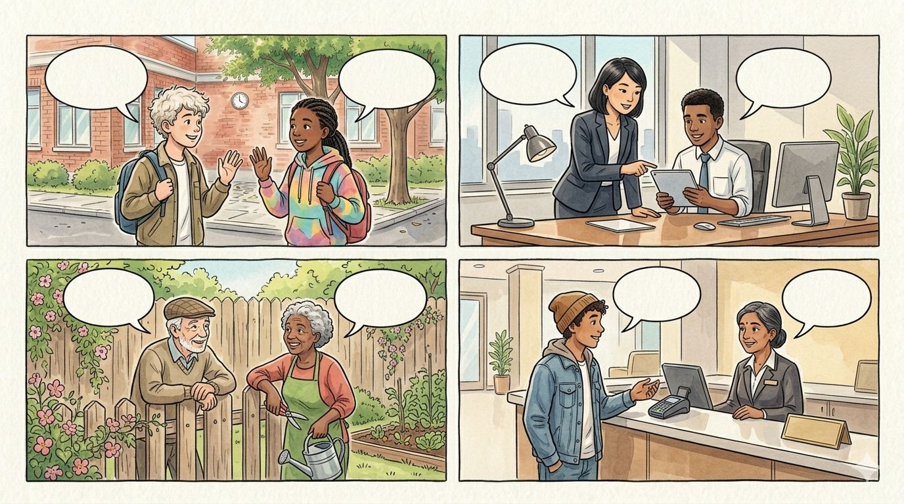
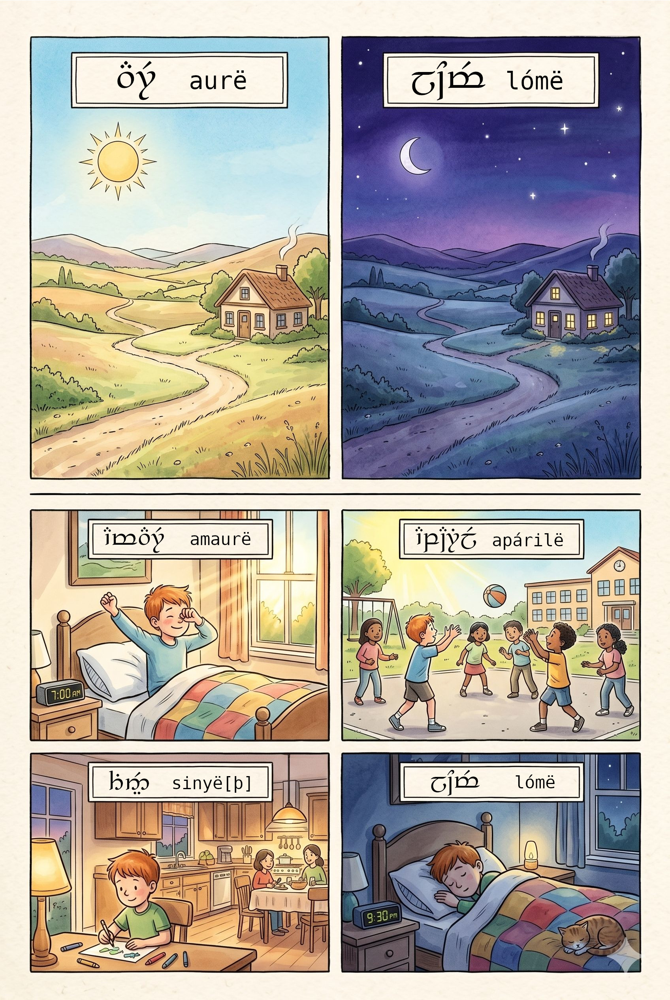
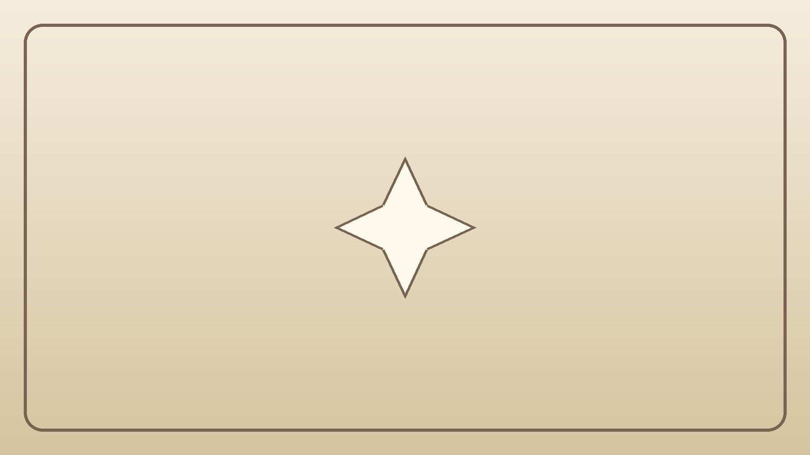
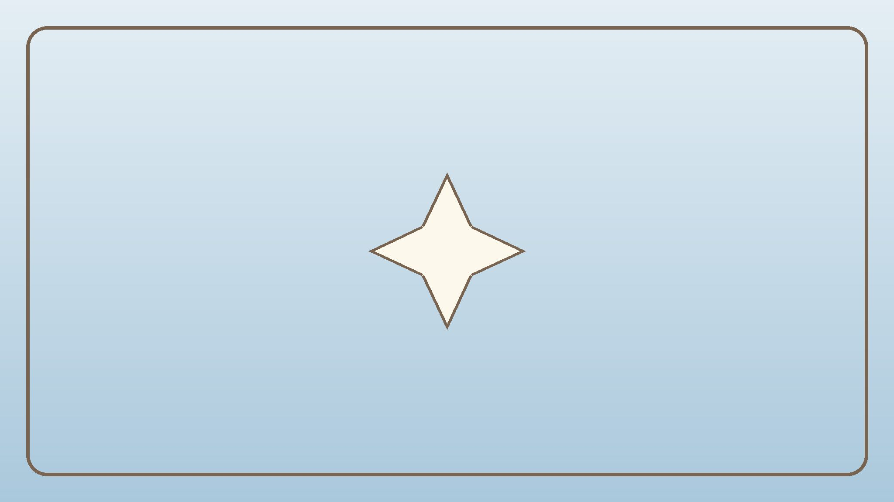
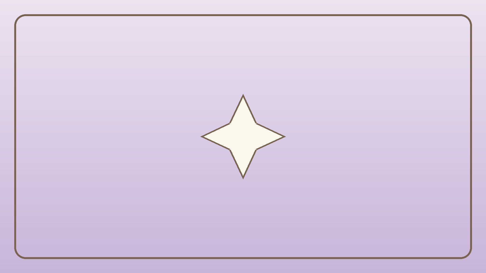

1 Carincë
1.1 Aiya!… ar Namárië!

Á lasta! 1.1
- Alla! … Mesta!
- Aiya! … Namárië!
Elenwë ar Nerdanel
Á lasta! 1.2
Elenwë: Alla, Nerdanel!
Nerdanel: Alla, Elenwë! Manen nalyë?
Elenwë: Mára, hantanyel. Ar elyë?
Nerdanel: Mára.
Elenwë: Mesta, Nerdanel!
Nerdanel: Mesta!
Elendil ar Rúmil
Á lasta! 1.3
Elendil: Aiya, Rúmil! Elen síla lúmenn’ omentielvo.
Rúmil: Aiya, Elendil! Elen síla lúmenn’ omentielvo. Manen nalyë?
Elendil: Mára, hantanyel. Ar elyë?
Rúmil: Mára. Namárië, Elendil!
Elendil: Namárië!
| Manen nalyë? | Mára, hantanyel. Ar elyë? |
|---|---|
| Manen nalyë? | Mára. |
1.2 Lúmë

Á lasta! 1.4
| lúmë | Mára …! |
|---|---|
| amaurë | Mára amaurë! |
| aurë | Mára aurë! |
| endaurë | Mára endaurë! |
| apárilë | Mára apárilë! |
| undómë | |
| sinyë | Mára sinyë! |
| lómë | Mára lómë! |
Á lasta! 1.5
Voronwë: Mára amaurë, Nerdanel!
Nerdanel: Mára amaurë, Voronwë!
Rúmil: Mára sinyë, Elenwë!
Elenwë: Mára sinyë, Rúmil! Manen nalyë?
Rúmil: Mára, hantanyel.
Elendil: Mára lómë, Voronwë!
Voronwë: Mára lómë, Elendil! Namárië!
1.3 Mana esselya?

Mi Avallónë
Á lasta! 1.6
Rúmil: Aiya! Essenya ná Rúmil. Nanyë istyar. Mana esselya?
Elenwë: Aiya, Rúmil! Essenya ná Elenwë.
Rúmil: Ar elyë? Mana esselya?
Voronwë: Essenya ná Voronwë.
Rúmil: Ar elyë?
Nerdanel: Essenya ná Nerdanel.
Rúmil: Ar elyë?
Elendil: Essenya ná Elendil.
Rúmil: Alla, Elenwë! Alla, Voronwë! Alla, Nerdanel! Alla, Elendil!
| essë | |
|---|---|
| ni | essënya |
| elyë | essëlya |
| ná- | |
|---|---|
| ni | nanyë |
| elyë | nalyë |
| se | ná |
| Mana esselya? | Essenya ná Elenwë. |
|---|---|
| Mana esselya? | Essenya ná Rúmil. Nanyë istyar. |
1.4 Mallo tulilyë?

Á lasta! 1.7
Rúmil: Elenwë, mallo tulilyë?
Elenwë: Tulin Valimarello. Nanyë Vanya.
Rúmil: Ar elyë, Nerdanel? Mallo tulilyë?
Nerdanel: Tulin Tirionello. Nanyë Noldo.
Rúmil: Voronwë, mallo tulilyë?
Voronwë: Tulin Endórello. Nanyë Noldo.
Rúmil: Ma quetilyë Quenya?
Voronwë: Ná, quetin Quenya ar Sindarin.
Rúmil: Ar elyë, Elendil? Mallo tulilyë?
Elendil: Tulin Númenórello. Nanyë Atan.
Rúmil: Ma quetilyë Sindarin?
Elendil: Ui, lá quetin Sindarin. Quetin Quenya.
| -llo | |
|---|---|
| Valimar | Valimarello |
| Tirion | Tirionello |
| Alqualondë | Alqualondello |
| Avallónë | Avallónello |
| Endórë | Endórello |
| Númenórë | Númenórello |
| tul- | quet- | ná- | |
|---|---|---|---|
| ni | tulin | quetin | nanyë |
| elyë | tulilyë | quetilyë | nalyë |
| se | tulë | quetë | ná |
| Ma …? | Ná. | Ui. |
|---|---|---|
| Ma quetilyë Quenya? | Ná, quetin Quenya. | Ui, lá quetin Quenya. |
| Ma tulilyë Tirionello? | Ná, tulin Tirionello. | Ui, tulin Valimarello. |
| Elda | Atan |
|---|---|
| Noldo · Vanya · Teler · Sinda |
1.5 Nóti

Á lasta! 1.8
| nótë | |
|---|---|
| 1 | minë |
| 2 | atta |
| 3 | neldë |
| 4 | canta |
| 5 | lempë |
| 6 | enquë |
| 7 | otso |
| 8 | tolto |
| 9 | nertë |
| 10 | quëan |
1.6 Lammar
Á lasta! 1.9
| lamma | quettar |
|---|---|
| a | Aman, Atan |
| á | mára, málo |
| e | Elda, Elendil |
| é | nér |
| i | Tirion, minë |
| í | nís, síla |
| o | Noldo, otso |
| ó | lómë, Endórë |
| u | tulin, undómë |
| ú | Rúmil, Númenórë |
| ai | aiya |
| au | aurë, amaurë |
| oi | Oiolossë |
| ui | ui, Uinen |
| eu | leuca |
| c | canta, cenda |
| qu | Quenya, quëan |
| y | Vanya, aiya |
1.7 Carië
1. Á lasta ar á tecë!
Á lasta! 1.10
amaurë · endaurë · sinyë · lómë
| Mára …! | |
|---|---|
| 1 | Mára ________! |
| 2 | Mára ________! |
| 3 | Mára ________! |
| 4 | Mára ________! |
2. Á quanta!
Alla · hantanyel · Manen · Mára · Mesta
Nerdanel: ________, Elenwë!
Elenwë: Alla, Nerdanel! ________ nalyë?
Nerdanel: ________, hantanyel. Ar elyë?
Elenwë: Mára, ________.
Nerdanel: ________, Elenwë!
3. Á cenda ar á tecë i nóti: 1, 2, 3, 4, 5!
| ___ | Rúmil: Aiya, Elendil! Manen nalyë? |
| ___ | Elendil: Namárië! |
| ___ | Elendil: Aiya, Rúmil! |
| ___ | Rúmil: Mára. Namárië, Elendil! |
| ___ | Elendil: Mára, hantanyel. Ar elyë? |
4. Á cenda (1.7) ar á tecë i hanquentar!
- Mallo tulë Elenwë?
- Mallo tulë Voronwë?
- Mallo tulë Elendil?
- Man quetë Sindarin?
- Ma quetë Elendil Sindarin?
- Man ná i istyar?
5. Á tecë!
Elda · Atan · Noldo · Vanya · Teler · Sinda
Essenya ná ________.
Nanyë ________.
Tulin ________.
Quetin ________.
6. Á notë ar á tecë!
| 3 | neldë |
| 5 | ________ |
| 1 | ________ |
| 8 | ________ |
| 10 | ________ |
| ________ | canta |
| ________ | otso |
| ________ | atta |
| ________ | nertë |
| ________ | enquë |
7. Á lasta (1.9) ar á enquetë!
Aman · mára · Elda · nér · Tirion · nís · Noldo · lómë · tulin · Rúmil · aiya · aurë · Oiolossë · ui · leuca · canta · Quenya · Vanya
8. Á quetë as málo!
| Elyë | Málolya |
|---|---|
| Elenwë · Valimarello · Vanya · Quenya | Elendil · Númenórello · Atan · Quenya |
| Nerdanel · Tirionello · Noldo · Quenya | Voronwë · Endórello · Noldo · Quenya ar Sindarin |
Aiya! Essenya ná ________. Mana esselya?
Mallo tulilyë?
Ma quetilyë ________?
Namárië!
1.8 Quettar
| Quetta | Eldamo |
|---|---|
| á | Q. |
| aiya | Q. |
| alla | Q. |
| amaurë | Q.* |
| apárilë | NQ. |
| ar | Q. |
| as | Q.# |
| Atan | Q. |
| atta | Q. |
| aurë | Q. |
| canta | Q. |
| carië | Q. |
| cenda- | Q. |
| Elda | Q. |
| elen | Q. |
| elen síla lúmenn’ omentielvo | Q. |
| elyë | Q. |
| endaurë | NQ. |
| enquë | Q. |
| enquet- | Q. |
| essë | Q. |
| hanquenta | Q. |
| hanta- | NQ. |
| i | Q. |
| istyar | MQ. |
| lá | Q. |
| lamma | MQ. |
| lasta- | Q. |
| lempë | Q. |
| leuca | Q. |
| lómë | Q. |
| lúmë | Q. |
| ma | Q. |
| málo | Q. |
| mallo | MQ. |
| man | Q. |
| mana | Q. |
| manen | Q. |
| mára | Q. |
| mesta | EQ. |
| mi | Q. |
| minë | MQ. |
| ná- | Q. |
| ná | Q. |
| namárië | Q. |
| neldë | Q. |
| nér | Q. |
| nertë | Q. |
| ni | Q. |
| nís | Q. |
| Noldo | Q. |
| not- | Q. |
| nótë | MQ. |
| omentië | Q. |
| otso | Q. |
| quanta- | Q. |
| quëan | Q. |
| Quenya | Q. |
| quet- | Q. |
| quetta | Q. |
| se | Q. |
| sil- | Q. |
| Sinda | Q. |
| Sindarin | Q. |
| sinyë [þ] | MQ. |
| tec- | MQ. |
| Teler | Q. |
| tolto | Q. |
| tul- | Q. |
| ui | Q. |
| undómë | Q. |
| Vanya | Q. |
| -llo | Q. |
| -lya | Q. |
| -lyë | Q. |
| -n | Q. |
| -nya | Q. |
1.9 Essi
| Essë | Eldamo |
|---|---|
| Alqualondë | Q. |
| Aman | Q. |
| Avallónë | Q. |
| Elendil | Q. |
| Elenwë | Q. |
| Endórë | Q. |
| Nerdanel | Q. |
| Númenórë | Q. |
| Oiolossë | Q. |
| Rúmil | Q. |
| Tirion | Q. |
| Uinen | Q. |
| Valimar | Q. |
| Voronwë | Q. |